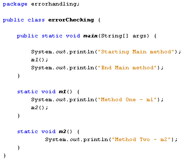
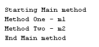
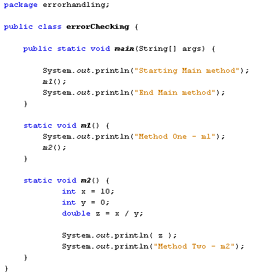
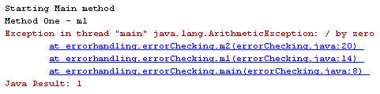
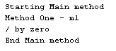

The Java Stack Trace
In the normal flow of a programme, when the Java Virtual Machine is running your code, one method after another will be executed, starting with the main method. When a method has its turn at the head of the programming queue it said be on top of the stack. After the whole of the method has been executed, it is taken off the stack to be replaced by the next method in the queue. To illustrate the principal, change your programme code to this:

We now have a Main method and two others: a method called m1, and a method called m2. When the programme first starts, the Main method is on top of the stack. However, inside of the Main method we have a call to the m1 method. When this method is called it jumps to the top of the stack. The m1 method in turn calls the m2 method. When m2 is called, it jumps to the top of the stack, pushing m1 aside temporarily. After m2 finishes, control is given back to m1. When m1 is finished, it gets pushed off the top of the stack, and control is handed back to the Main method.
Run your programme and watch the Output window to see what gets printed out:

If something goes wrong in method m2, the JVM will look for any error handling, like a try … catch block. If there is no error handling, the Exception will get handed to m1 to see if it is dealing with the error. We don't have any error handling in m1 so again the Exception gets passed up the stack, this time to the Main method. If the Main method doesn't deal with the Exception then you'll get a strange error message printed to the Output window. As an example, adapt your m2 method to this:
static void m2( ) {
int x = 10;
int y = 0;
double z = x / y;
System.out.println( z );
System.out.println("Method Two - m2");
}
The method contains the divide by zero error again. Your code should now look like ours below:

Run the programme and watch what happens in the Output window:

What you're looking at is something called a stack trace. The three lines in blue underline refer to your methods, and where they can be found:
package_name.class_name.method_name
The one at the top is where the error first occurred, in m2. Java was looking for this to be handled by an ArithmeticException, which is where divide by zero errors should be caught. There was no error handling in m2, m1, or main. So the programme outputted to the default error handler.
Change you m1 method to this:
try {
System.out.println("Method One - m1");
m2( );
}
catch (ArithmeticException err) {
System.out.println( err.getMessage( ) );
}
We've now wrapped up the method called m2 in a try block. In the catch part, we've used the Exception type that was reported in the stack trace - ArithmeticException.
Run the code again, and the Output window will display the following:

Notice that the error message is printed out: "/ by zero". The whole of the m2 method was not executed, but was stopped where the error occurred. Control was then passed back to m1. Because there was a catch block to handle the error, the JVM saw no need to a default error handler, but printed out the message between the curly brackets of catch.
The programme itself was not stopped, however. Control was passed back to the Main method, where the m1 method was called. The final line in the Main method, printing out "End Main method", was executed. This has important implications. Suppose you needed the value from m1, because you were going to do something with it in Main. The value wouldn't be there, and your programme may not behave as expected.
But if you see a stack trace in the Output window, just remember that first line is where the problem occurred; the rest of the lines, if any, are where the Exception was handed up the stack, usually finishing at the main method.
In the next part, we'll look at Logic Errors.